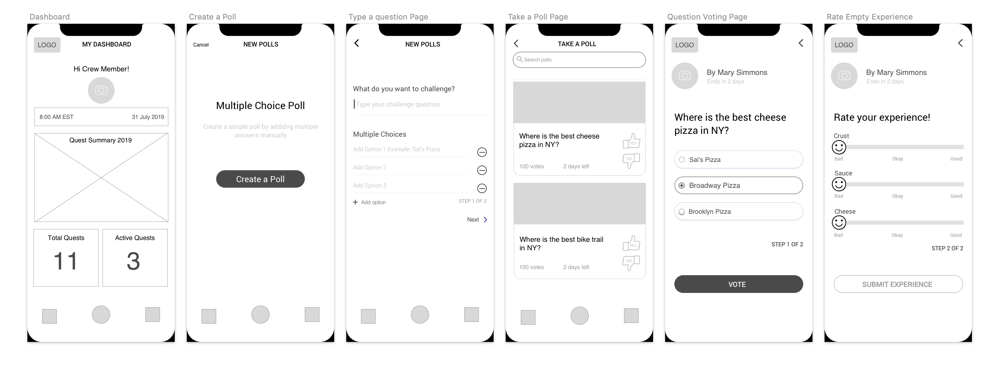

My role was to conduct usability tests, research the competitors, and build user-centric designs. I collaborated with stakeholders and designed solo to launch this project.
Skills: Sketch | Invision | Whimsical
Timeframe: 5 Days
Platform: iOS
Team: Solo UX Designer
Role: My role was to research, design and test all UI’s related to the project. I collaborated with stakeholders and designed solo to launch this project.
Quest for the Best is a social challenge platform that encourages members of an urban-center community to seek out the best available experiences in their area. It removes the pain of exploring new places with an innovative, seamless user interface. My role was to research, design and test all UI’s related to the project. I collaborated with stakeholders and designed solo to launch this project.
User Testing
I conducted effective usability tests in order to gather as much feedback so that I can I dentify problems early in the stage. Happier Users means more customers, I decided to understand what experiences makes a happy user, by conducting several feature testing on usabilityhub.com and 5 in-person interviews. I wanted to know exactly what type of questions prompted accurate feedback from users.
Competitve Research
I did a competitive analysis in order to identify the strengths and weaknesses of the competitors so that I can be one step ahead. There are existing poll apps conducting similar tasks, so I conducted research on the top 3 most relevant competitors. Research helped me finalize the color pallete for the application. Purple combines the calm stability of blue and the fierce energy of red. The color purple has a variety of effects on the mind and body and is believed to increase your imagination, remove perceived spiritual obstacles, calm confrontations, and re-energize the learning of new things.
Wireframes
I created wireframes in order to focus on structure and functionality enabling me to identify all the different screens I might need to designI prefer starting out with sketches on whimsical/hand drawn, to think through the structure of screens. I used pencil/paper and whimsical to sketch possible ideas. After I picked the best designs for each features I used Sketch to create low-fidelity mockups to iterate through the design process.

Prototype
I built clickable prototypes in order to bring the designs to life, so that the user gets a feel for both visual and interactive end product. Design is worth a thousand words and I wanted to know what those were! So I had users test out my invision high-fidelity prototype and tell me exactly what their thoughts were.
Key Takeaways
I learned that if people will be overwhelmed by the application, it will result in an inaccurate feedback in polls, which is the bread and butter of the app. Sometimes making decisions based on your previous projects/experiences may seem ideal, and that’s okay as long as you keep the user in mind.
During the user research process, I came to the conclusion on how important it has become for people to check reviews and feedback of products, experiences and restaurants before trying it out themselves. This helps prevent a user from having a bad experience.
The project had many challenges, but the most difficult piece was to design the rating part of the poll, and to make it simple and easy for the user to rate the quest. Creating the most effective way of rating the experience was crucial to ensure that the feedback was accurate. The same emotions had to be recreated to reflect the actual experience.
While the whole project was a huge learning experience, I especially enjoyed iterating on designs and testing those new designs that I knew were the result of user feedback. This process helped take the ambiguity out of the designs, and it felt good to produce designs that user will actually enjoy using. I always enjoy the user testing because amazing things will happen when you listen to the users.
"Build something 100 people love, not something 1 million people kind of like." -Brian Chesky, co-founder of Airbnb.